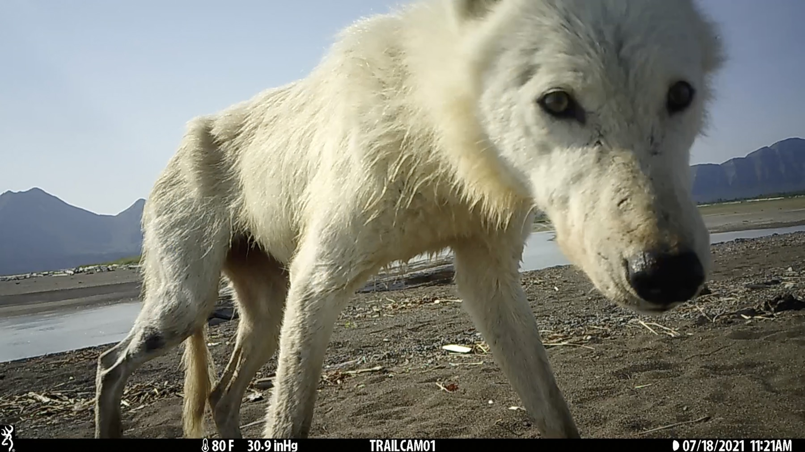

Cascadia AI Lab
Deep learning, computer vision, and bioacoustics AI for wildlife monitoring at scale — backed by expertise in ecology, computer science, and research computing.
AI Built for the Field, Not the Benchmark
Wildlife monitoring generates data at a pace that has long outrun our ability to review it manually. The Cascadia AI Lab exists to close that gap — deploying machine learning models that are trained for your specific taxa, your sensors, and your habitat, not optimized for generic benchmark datasets.
We bring together wildlife ecologists who understand the biology, computer scientists who understand the models, and research computing specialists who understand how to process data at scale. This combination — rare in the Pacific Northwest — means we can take a camera trap array or acoustic recorder network from raw data to species-level occupancy estimates without the research team ever touching a single image or audio file.
Bioacoustics is a core pillar of the lab. Through our partnership with the Pacific Northwest Bioacoustics Lab and co-led by Damon Lesmeister of the USDA Forest Service, we offer integrated acoustic monitoring for owls, bats, frogs, and songbirds — from hardware deployment through custom neural network detectors and occupancy-based population inference.
Work With UsAI & Data Science Services
From raw sensor data to publication-ready ecological inference
Camera Trap Image Classification
Custom species classifiers trained on your images and your target taxa — optimized for your camera models, habitat types, and focal species. We deliver calibrated confidence scores ready for occupancy and abundance modeling.
Acoustic Species Detection
Automated detection of focal species from AudioMoth, Swift, and Song Meter recordings. We build custom detectors for owls, bats, frogs, and songbirds that go beyond generic classifiers — tuned for your soundscape and species of interest.
Soundscape Ecology
Quantify acoustic biodiversity, habitat quality, and anthropogenic disturbance using soundscape indices and community-level acoustic analysis. A powerful complement to point-count or camera trap data, and well-suited for continuous long-term monitoring.
Individual Re-identification
Match individuals across camera stations using natural markings — spots, stripes, coat patterns — enabling DNA-free mark-recapture studies for felids, canids, and other distinctively marked species.
Automated Monitoring Pipelines
End-to-end data workflows that ingest raw sensor output, apply AI inference, filter detections, and produce structured databases ready for downstream occupancy or abundance modeling — reducing manual review from months to days.
Edge & Field Deployment
Deploy trained models on field hardware for real-time detection without cloud connectivity. Enables triggered camera activation, adaptive sampling, and smart sensor applications in remote environments without data upload requirements.
Tools & Featured Work
Peer-reviewed models and open-source software developed by the Cascadia AI Lab
PNW-Cnet
A convolutional neural network for automated species identification from passive acoustic recorders. PNW-Cnet was trained on Pacific Northwest soundscapes and provides high-accuracy detection of owls, bats, frogs, and other taxa directly from AudioMoth and Swift recordings — enabling survey-scale acoustic monitoring without manual review.
Read the PaperNJOBVU-AI
Open-source software for training custom computer vision models on camera trap imagery. NJOBVU-AI lowers the barrier to species-specific classifier development — providing a full active-learning workflow from raw images through model training, validation, and deployment, without requiring deep machine learning expertise.
Read the PaperDeployed Classifier Models
A growing library of custom computer vision classifiers trained for specific taxa, landscapes, and camera systems:
- Oregon Critters — multi-species classifier for Pacific Northwest mammals trained on large-scale Oregon camera trap datasets in partnership with NCASI
- Project Nkhotakota — species classifier for the Nkhotakota Wildlife Reserve in Malawi, trained on a rewilded savanna community following Africa's largest elephant translocation
People & Partnerships
Wildlife ecologists, computer scientists, and research computing specialists — working together with key partner organizations

Damon Lesmeister
Research Wildlife Biologist, USFS
USFS PNW Research Station →

Chris Sullivan
Director, Research & Academic Computing, OSU
OSU Research Computing →

Matt Betts
Professor, Oregon State University
Forest Landscape Ecology Lab →Pacific Northwest Bioacoustics Lab
A core partner of the Cascadia AI Lab and co-led with Damon Lesmeister, the PNW Bioacoustics Lab provides deep expertise in passive acoustic monitoring hardware, deployment protocol design, and custom AI detection models for the full Pacific Northwest acoustic community. Together we offer fully integrated acoustic monitoring services — from AudioMoth and Swift recorder deployment through detector training and occupancy-based population inference for owls, bats, frogs, and songbirds.
PNW Bioacoustics Lab →NCASI
The National Council for Air and Stream Improvement (NCASI) is a partner organization that brings wildlife monitoring expertise and industry-scale data collection capacity to the Cascadia AI Lab. Katie Moriarty leads mammal-focused work at NCASI, and our collaboration allows us to train AI models on exceptionally large camera trap datasets spanning Pacific Northwest forest landscapes.
NCASI →
